Kate Miraglia
Photography
American Swedish Museum Rebrand
2022
Over the course of a term I created a mock rebrand for the non-profit American Swedish Museum.
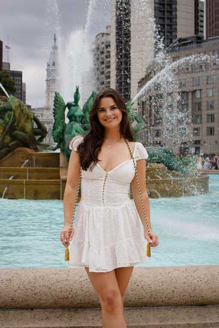 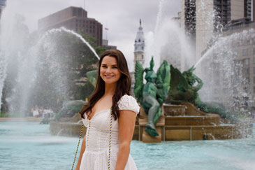 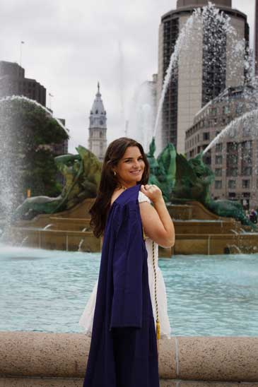 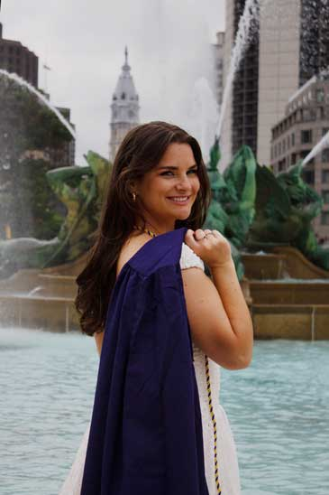
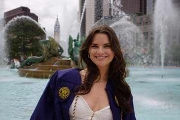 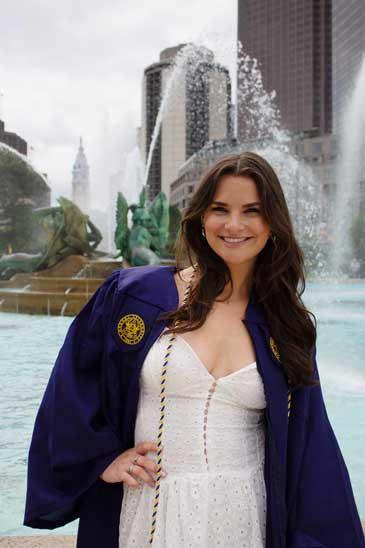 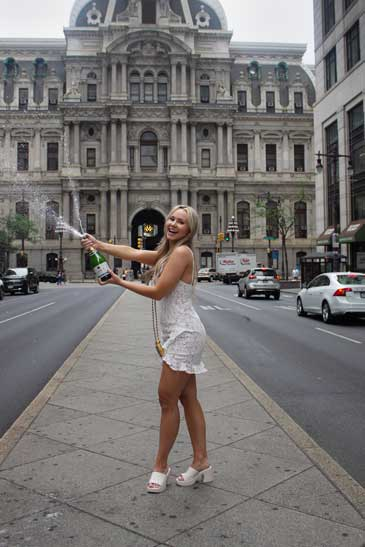 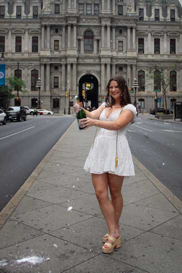 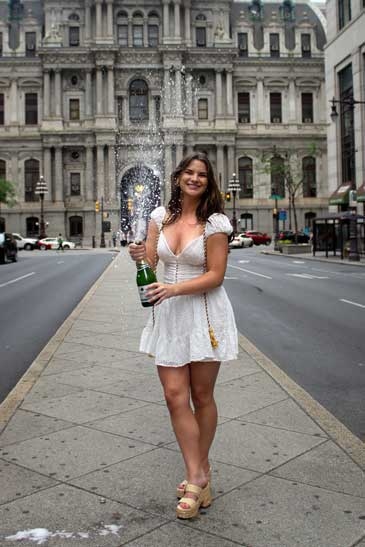 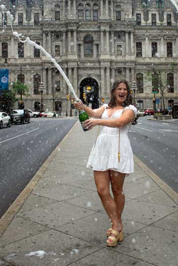 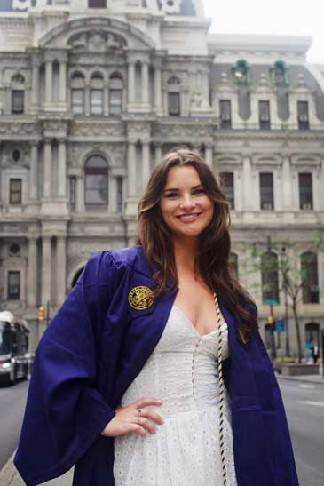
Home
Environmental Graphic Design
Publication Design
Web and Digital Design
Event Materials
Brand Design
Photography
Contact and Info


 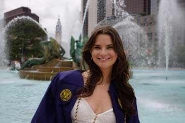
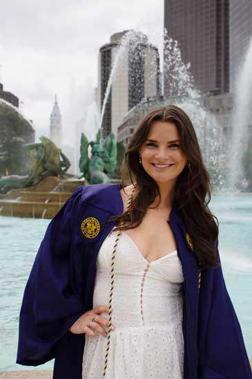
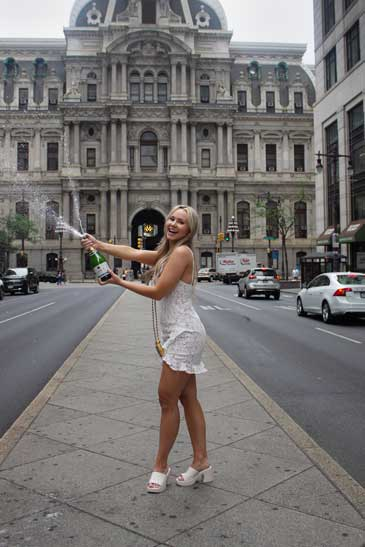
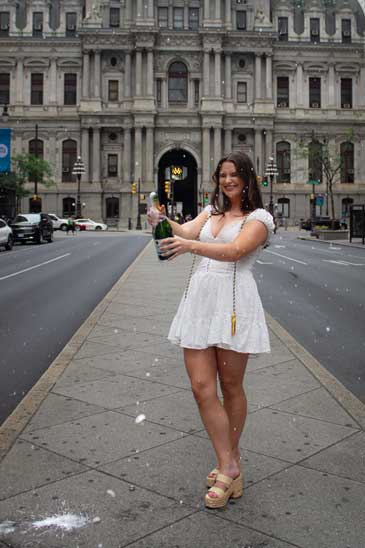
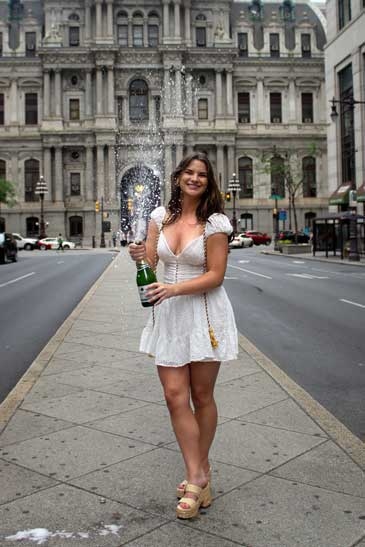
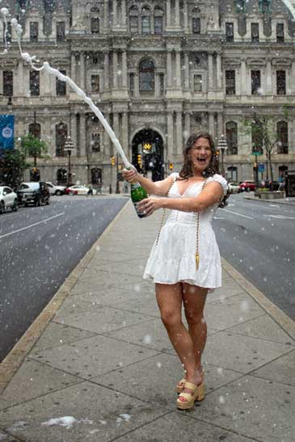
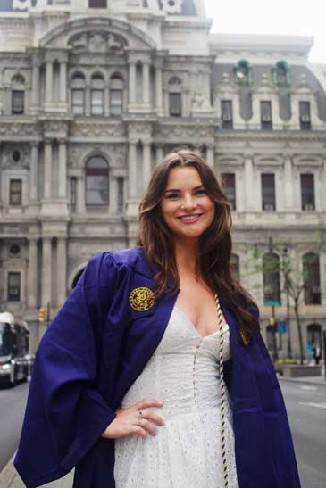
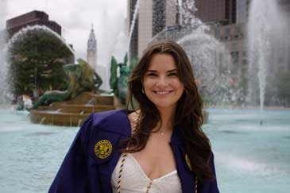
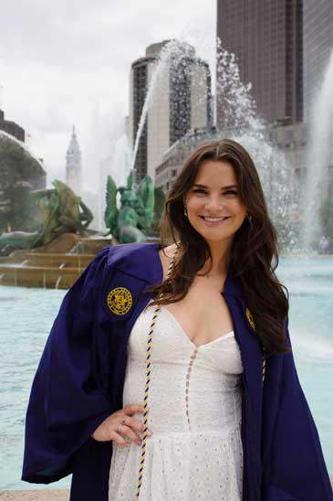
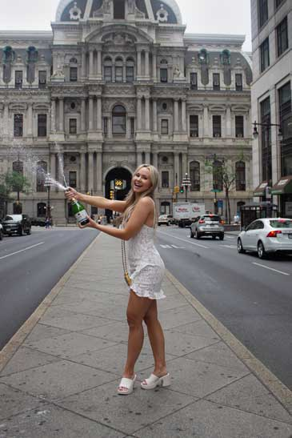
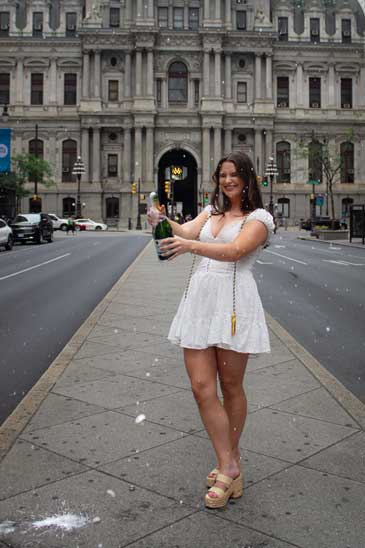
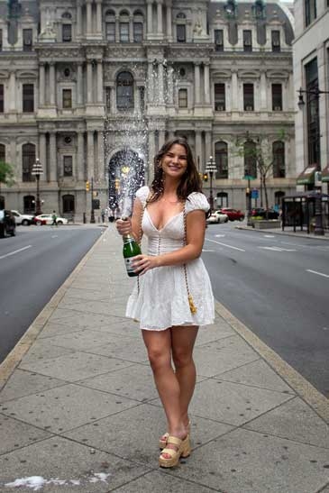
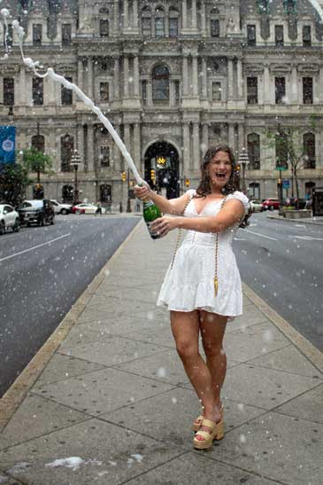
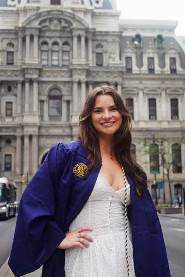